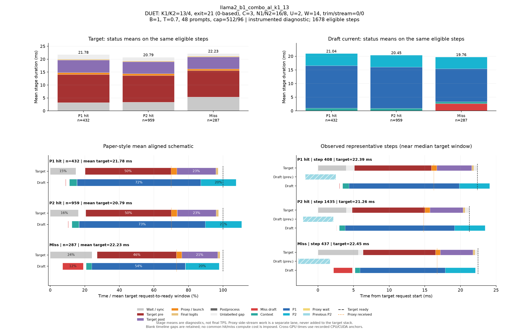

DUET: K1/K2=13/4, exit=21 (0-based), C=3, N1/N2=16/8, U=2, W=14, trim/stream=0/0
| Pass | 용도 | N | B | T | Seed | AL* | Cache hit | TPS* | Raw TPS |
|---|---|---|---|---|---|---|---|---|---|
| 0 | profile-diagnostic | 48 | 1 | 0.7 | 5100 | 2.404 | 83.30% | 59.08 | 60.03 |
Input/output cap: 512/96 · GPUs: 2,3 · draft seed: 0 · source: cbdc41f16a5770d4cb1c6f6fcbd0e5396c6e3997
PNG · 벡터 PDF · 원본 결과 JSON
세부 trace: 1678 eligible steps. Target 원본 · Draft 원본
제외 수: {"initial": 19, "output_boundary": 40, "capture_or_next": 11}
왼쪽 아래는 상태별 평균 정렬 schematic, 오른쪽 아래는 실제 대표 step입니다. %의 분모는 각 상태의 평균 target request→ready 시간이며 phase overlap은 별도 lane에 표시합니다.

{
"args": {
"target": "/home/chokwans99/models_mlsys/layerskip-llama2-7b",
"draft": "/home/chokwans99/models_mlsys/AMD-Llama-135m",
"mode": "duet-tree",
"batches": [
1
],
"temperatures": [
0.7
],
"seeds": [
5100
],
"target_tp": 1,
"prompts": "/home/chokwans99/PSD-mlsys-coverage/results/mlsys_coverage/round5/tuning48.json",
"limit": 0,
"max_new_tokens": 96,
"max_model_len": 2048,
"input_cap": 512,
"k1": 13,
"k2": 4,
"draft_fan_out": 2,
"proxy_fan_out": 1,
"p1_tree": true,
"p1_verify_nodes": null,
"p2_verify_nodes": null,
"exit_layer": 21,
"p1_nodes": 16,
"p2_nodes": 8,
"tree_width": 3,
"p1_roots": 2,
"p2_budget": null,
"tree_root_count": null,
"tree_beta": 0.5,
"tree_proxy_threshold": 0.01,
"tree_conf_threshold": 0.03,
"root_source": "complement",
"root_normalization": "full",
"root_overlap_mix": 0.25,
"memory_fraction": 0.45,
"ignore_eos": false,
"greedy_only": false,
"audit_preemption": false,
"ragged_limits": false,
"tree_calibration_dir": null,
"preflight_test": null,
"output": "/home/chokwans99/PSD-mlsys-coverage/results/mlsys_coverage/round5/llama2_b1_combo/llama2_b1_combo_al_k1_13.json"
},
"engine_kwargs": {
"num_gpus": 2,
"max_num_seqs": 1,
"max_model_len": 2048,
"max_num_batched_tokens": 2048,
"gpu_memory_utilization": 0.45,
"speculate": true,
"draft_async": true,
"greedy_only": false,
"jit_speculate": true,
"speculate_k": 17,
"async_fan_out": 3,
"duet_p1_tree_policy": "on",
"duet_p2_tree_policy": "on",
"draft": "/home/chokwans99/models_mlsys/AMD-Llama-135m",
"duet_enabled": true,
"duet_exit_layer": 21,
"duet_phase1_k": 13,
"duet_phase2_k": 4,
"duet_draft_fan_out": 2,
"duet_p2_tree_max_nodes": 8,
"duet_p2_tree_verify_nodes": 8,
"duet_p1_tree_max_nodes": 16,
"duet_p1_tree_verify_nodes": 16,
"duet_tree_c_tensor": 3,
"duet_p1_roots_per_position": 2,
"duet_p2_budget": null,
"duet_tree_root_count": null,
"duet_tree_beta": 0.5,
"duet_tree_proxy_threshold": 0.01,
"duet_tree_conf_threshold": 0.03,
"duet_root_source": "complement",
"duet_root_normalization": "full",
"duet_root_overlap_mix": 0.25
},
"env": {
"CUDA_VISIBLE_DEVICES": "2,3",
"SSD_CUDA_ARCH": "8.9",
"SSD_ATTN_BACKEND": "auto",
"SSD_DIST_PORT": "31013",
"OMP_NUM_THREADS": "4",
"SSD_SEED": "0",
"SSD_CHAIN_PROXY_GRAPH": "1",
"SSD_FAST_VERIFY": "1",
"SSD_BATCHED_PROXY_GRAPH": "1",
"SSD_DUET_EXIT_REPLICA": "0",
"SSD_ASYNC_PROXY_SEND": "1",
"SSD_PROXY_STREAM": "0",
"SSD_BATCHED_TREE": "1",
"SSD_TREE_EXPANSION_POLICY": "reach_gain_frontier",
"SSD_TREE_REACH_CALIBRATION": "/home/chokwans99/PSD-mlsys-coverage/results/mlsys_coverage/round4/calibration/reach.json",
"SSD_TREE_GAIN_CALIBRATION": "/home/chokwans99/PSD-mlsys-coverage/results/mlsys_coverage/round4/calibration/gain.json",
"SSD_DUET_MISS_K": "4",
"SSD_TREE_FUSED_MATH": "1",
"SSD_BATCH_TREE_BULK_EXPORT": "1",
"SSD_TREE_PARALLEL_INSERT": "0",
"SSD_PROFILE_DUET": "1",
"SSD_PROFILE_DUET_MAX_EVENTS": "100000",
"SSD_TREE_SHAPE_METRICS": "1",
"SSD_PROFILE_DIR": "/home/chokwans99/PSD-mlsys-coverage/results/mlsys_coverage/round5/profiles/llama2_b1_combo_al_k1_13",
"SSD_HF_CACHE": "/home/chokwans99/models_mlsys",
"SSD_DATASET_DIR": "/home/chokwans99/PSD-mlsys-coverage/results/mlsys_coverage/round5"
},
"effective_features": {
"fast_verify": true,
"batched_proxy_graph": true,
"exit_replica": false,
"jit_speculate": true,
"duet_jit_short": true,
"miss_depth": 4,
"miss_width": 1,
"tree_fused_math": true,
"tree_parallel_insert": false,
"bulk_export": true
},
"resolved_env": {
"SSD_CUDA_ARCH": "8.9",
"SSD_ATTN_BACKEND": "auto",
"SSD_DIST_PORT": "31013",
"SSD_SEED": "0",
"SSD_CHAIN_PROXY_GRAPH": "1",
"SSD_FAST_VERIFY": "1",
"SSD_BATCHED_PROXY_GRAPH": "1",
"SSD_DUET_EXIT_REPLICA": "0",
"SSD_ASYNC_PROXY_SEND": "1",
"SSD_PROXY_STREAM": "0",
"SSD_BATCHED_TREE": "1",
"SSD_TREE_EXPANSION_POLICY": "reach_gain_frontier",
"SSD_TREE_REACH_CALIBRATION": "/home/chokwans99/PSD-mlsys-coverage/results/mlsys_coverage/round4/calibration/reach.json",
"SSD_TREE_GAIN_CALIBRATION": "/home/chokwans99/PSD-mlsys-coverage/results/mlsys_coverage/round4/calibration/gain.json",
"SSD_DUET_MISS_K": "4",
"SSD_TREE_FUSED_MATH": "1",
"SSD_BATCH_TREE_BULK_EXPORT": "1",
"SSD_TREE_PARALLEL_INSERT": "0",
"SSD_PROFILE_DUET": "1",
"SSD_PROFILE_DUET_MAX_EVENTS": "100000",
"SSD_TREE_SHAPE_METRICS": "1",
"SSD_PROFILE_DIR": "/home/chokwans99/PSD-mlsys-coverage/results/mlsys_coverage/round5/profiles/llama2_b1_combo_al_k1_13",
"SSD_HF_CACHE": "/home/chokwans99/models_mlsys",
"SSD_DATASET_DIR": "/home/chokwans99/PSD-mlsys-coverage/results/mlsys_coverage/round5",
"SSD_FORCE_SPLIT_K1K2": "1",
"SSD_DUET_JIT_SHORT": "1",
"SSD_SHM_NAME": "ssd_2722516"
},
"runtime_source_sha256": {
"ssd/ssd/__init__.py": "f1a221b38f55b42ef0619cba48a411acbbd1965c4845b4643f77443b7ce77950",
"ssd/ssd/config.py": "865ddb5e09ec11f4bc8511dad3f5abad39a6ab412cf0bbcd6213179b5245fa31",
"ssd/ssd/engine/block_manager.py": "05d873619b419d31f47b4be4025bc7c9f11759f5f0bc3f65fbff3a1e8f94660a",
"ssd/ssd/engine/draft_runner.py": "8cb7e22f725de2c0d9c85912ae04f88f1674f34c0cee4b5beccc9a3b5be1c174",
"ssd/ssd/engine/helpers/batch_tree_common.py": "739feeb975c20d0adbdae51735b8983aa6cae8b59d6237b285db0c766d558f27",
"ssd/ssd/engine/helpers/batch_tree_draft.py": "f361030685350183884cc55b9058945515bb00da53fc86541f7902bfd2138528",
"ssd/ssd/engine/helpers/batch_tree_forward.py": "055816634313851965682e2b5591d7e20fdf6162fab3bec1ca5db087ccea347a",
"ssd/ssd/engine/helpers/batch_tree_inputs.py": "c0a05d13ba0e63ecbc920425ddd6a98dc60001d93d73085e75d2d4a9b110a066",
"ssd/ssd/engine/helpers/batch_tree_roots.py": "ad3c4e772392c1043284ac4912d606543f3fd76167135b73e4f72a700e6820c7",
"ssd/ssd/engine/helpers/batch_tree_sampling.py": "ac466b59a1dab2a34e8630db347a2c8d16de3e00a526b258537a82245fbb5006",
"ssd/ssd/engine/helpers/batch_tree_verify.py": "f1258a91f3aea07be44267602808a8075769ee2e1908dad67ff49f7b1bbe811b",
"ssd/ssd/engine/helpers/batched_proxy.py": "6ed4f9b85ff8cf9c24b7ad43a1b7377d08123eeef5307366a373dacda184da86",
"ssd/ssd/engine/helpers/batched_tree_executor.py": "098d64cad2d20d96091631f6bc91da73b1e893ec400c3431a4ed68d007a9ef45",
"ssd/ssd/engine/helpers/cudagraph_helpers.py": "0436aec61d05d0b79696a48665042e364f3f4c50d853b68dc424e435b54be0c9",
"ssd/ssd/engine/helpers/e0_trace.py": "23ecd9bce2587cbef3f99c8894964c0d9642d33d372bd7be4954a5a2840a142e",
"ssd/ssd/engine/helpers/mask_helpers.py": "8ada4e709a6ab310ee920a7176b3684f89860022fc659442f6cb02ed5fb87d88",
"ssd/ssd/engine/helpers/p1_tree.py": "f48ae6b01e593d2598262b34007a6b58dde9e57e94138dde62f81d5526637398",
"ssd/ssd/engine/helpers/p2_tree.py": "73b0a512d834ab3a4608d9cd898b13b32630dd3b914b49e753c1116ac0640b41",
"ssd/ssd/engine/helpers/p2_tree_executor.py": "cfb04f959fd08baf3819a688a907cac4e3071a2727085ea08ca089b50a21e82e",
"ssd/ssd/engine/helpers/packed_tree_forward.py": "b903d6fe4d1fe18f95f6540f488acf40d469154100239429256eace61b1d7e76",
"ssd/ssd/engine/helpers/packed_verify.py": "a50ff24e93324840783b60102bfaeb3786711f05f64bd897708c779535c1820f",
"ssd/ssd/engine/helpers/root_policy.py": "4fd5cc949ee7c63db08060046bea197a62299c31af0a90990294ce39cf13a66e",
"ssd/ssd/engine/helpers/runner_helpers.py": "bfb570d8e018ee296a6c2a8c3c9e75919fd0eb1beb288ceb80121ad116419bf2",
"ssd/ssd/engine/helpers/speculate_types.py": "2929b5f3a176d04b6a4b01f092b224ad733dfda10a647bb73801cd346441ae91",
"ssd/ssd/engine/helpers/tree_expansion_policy.py": "47f818d1b8f284e56813af294723f6a934c3da0502b9ae4e611b54ba6fb85dac",
"ssd/ssd/engine/helpers/tree_fused_math.py": "930a1215363a3b6f878cbc4a71c3f59293f46aa2eab3c4938e5bb51e95868d2e",
"ssd/ssd/engine/helpers/tree_gain_allocation.py": "6f32c6a7b69272c1b42992d95c546bfd3980ccd71af3b3346e9df61977907b6a",
"ssd/ssd/engine/helpers/tree_host_topology.py": "86d0deab4da2932540a108c4c2b3560b8634837e71ba23783375c2001e4cf81c",
"ssd/ssd/engine/helpers/tree_layout.py": "4e5e47c54a4efd5a30ae8c528e1d2d9493d12aa5605c0e65c2f86ba874805be1",
"ssd/ssd/engine/helpers/tree_proxy_stream.py": "7d3b7e4568353d4e2bdb92000d2338026936dd015b30780a3c91f0cb50cab74c",
"ssd/ssd/engine/helpers/tree_rerank_gpu.py": "e4a8bff8828f983d6eb407504f87f2a9edf08a1750449fe46565e661f892b734",
"ssd/ssd/engine/helpers/tree_topology_gpu.py": "3a6cf8796faabbe8adef56deedf8956c1cf252a31e0491f3b71a8544bdcf89af",
"ssd/ssd/engine/llm_engine.py": "b0081876ef6470f91fa562acc0317074a85afa9aec8322182bda7749153db00f",
"ssd/ssd/engine/model_runner.py": "5fa9e910f38538c276a151113fc490be9c75ae9af2bf35ba6eaa5513b237a421",
"ssd/ssd/engine/scheduler.py": "52a36e8bb2abc26f775562a39bd95ea6cc8c70650e6193ddaa0fad762afb8ae4",
"ssd/ssd/engine/sequence.py": "6894715ef142074b118bfa3018b10826d2748518e9c8b71291064eb99fae9bd9",
"ssd/ssd/engine/speculator_async.py": "cd16395d5e5d7380d29f5a27e1495b6a40758c0452ce2cb40d996e2c3271c114",
"ssd/ssd/engine/speculator_sync.py": "30487afa7f5027735ebd752ca1a53003f1d56350f503ea91931ef64e7aab115e",
"ssd/ssd/engine/step.py": "525d3022561c9eee96ec076032bb27e281af744feb739ddc17e52344a9cafe8f",
"ssd/ssd/engine/verifier.py": "f6795547f278628312d2dd5ab0a28e9f34489b8e6d02038566a65fa3190a0928",
"ssd/ssd/layers/activation.py": "13d88b460e7610df28c6a7c719dd8bf21c5c59ae0f85c94d505d499215618a82",
"ssd/ssd/layers/attention.py": "bbafa69d9b52dedf81542f2c3227b7f061de11c679a6681a16b0c137ccfc672b",
"ssd/ssd/layers/embed_head.py": "b896a56b908d75c8f30462b0b1a4ce634276ddb41165fdaa0220c55a2ddf7257",
"ssd/ssd/layers/fi_attn.py": "4b0a275d020c1c3ce37f4e2a6c04bff12577d6f11feec7d79959652300fc9a0c",
"ssd/ssd/layers/layernorm.py": "a076c8d2e31d2597119d8504a69afd8711b41a29b5ccb7e1bf111a6c7277400e",
"ssd/ssd/layers/linear.py": "82c096262013516c5f0a43f7c28f23aa6db6b14f52cbe1ce1dacc5f9d5c4b0b6",
"ssd/ssd/layers/rotary_embedding.py": "1bcca21cf5e4d81c11a5c55d59a6033874c4e6a0003cc4ae8e1aa6165976a723",
"ssd/ssd/layers/sampler.py": "df22591a229ae5c2f62d4797707470ebccb8e55f7064577bc24a656ed797f213",
"ssd/ssd/llm.py": "496950f31428f674b70e8e137e029aa16dd82fdc8d8b8cc76f9ebdce86f7f653",
"ssd/ssd/models/eagle3_draft_llama3.py": "0d6e713a419cf884fc85984f9a2a6de520119032075a7c99158e0df7e2faca84",
"ssd/ssd/models/llama3.py": "ac801bd73e999f04a6fc862ca1d49bc94c88315456cfb6cb1215a503bcc5e07d",
"ssd/ssd/models/qwen2.py": "6804e3662a173368632e5f05b9893cc0cd28a61ac9bd25dbe8cd6f387ca0d1ca",
"ssd/ssd/models/qwen3.py": "535495bf69933fd9c677275453b801189e2c3c78a94fcc5133fc65b88c9f69c7",
"ssd/ssd/paths.py": "72c52420daaf6d457c60235617efc3f8b1e3ae208a35f3bc45438adc9d7e01ac",
"ssd/ssd/quant/__init__.py": "a69f0de0a516ba2bf9e13680b75b8f5d538c2eb281b095662ed1515f8b0f8698",
"ssd/ssd/quant/adapter.py": "fbb1ce4a198a585c31b0102555d1f84d18b09b0de1b90a5808d93ec8ff7ac271",
"ssd/ssd/quant/awq_calibrate.py": "116807eca0a3e4e001aa24a3344031416e4060a6c1b2e39f59829fba09484126",
"ssd/ssd/quant/build.py": "37f9c72ac69af213f2720c86faf380b8a46baaad0b98bf5f2e3c7fa9b3fbc43c",
"ssd/ssd/quant/config.py": "080c327b2297d0905f8fddc8d994aa7b9dc1086d7703d951471d48cea8723a1d",
"ssd/ssd/quant/importer.py": "c8990b69bc9e4e152e7e80b7f08f273c6a4652c1f7e95a8247f85e50030f4f92",
"ssd/ssd/quant/init_context.py": "6aa3dc3f6e95d8902fa7244d0010110b6fcf1ffdccedd6eaa389204339fc214f",
"ssd/ssd/quant/io.py": "f44f98a57351ff1063b7423d2f8390a565a30796fd6c3beaeaa8825f906e66b5",
"ssd/ssd/quant/loader.py": "14f901b1f53a3650be7eff497f626469e2b1fbc487202c639d33c8dd4c9047fb",
"ssd/ssd/quant/marlin.py": "4f1996e9f63d7109e92a3a7ec5350069ba67d7659f2149e99b84ca3c6626b241",
"ssd/ssd/quant/marlin_utils.py": "f64ec8d7ec8260556abd21e229567971a928882f14b93d288a6732d55c12fc90",
"ssd/ssd/quant/naming.py": "7ba73900af5e6d6fa2d1907bd2611625fc72f28a1fb9ea4834cd9a45901632d6",
"ssd/ssd/quant/pack.py": "b7dd683b7cdbfbb6f4ce1e13a51a72240a8dc3a35b7ed652dc664d26bb384711",
"ssd/ssd/quant/state.py": "82cb1050a3b1776765df7ad8f6c59c23a86ac8d1d4cc3c974cded7f8e762f806",
"ssd/ssd/sampling_params.py": "7f79868c4ca115bb18e017411a6c5545f354aa858aa0b8076aafb756d0785032",
"ssd/ssd/utils/async_helpers/async_spec_helpers.py": "0d70779098c5051fcba5d3add5ff0b7896139f1b7789babe701a8df6eaa40f24",
"ssd/ssd/utils/async_helpers/duet_policy.py": "1fb3e1ec1c41a9cda5f531f8c732b09145c7d87ea79d74c331b8176f11f22aaf",
"ssd/ssd/utils/async_helpers/nccl_pack.py": "6330e785f3e81acffe25a82061d3098f7834ad3c2d07bb071d79ed9923b18dc1",
"ssd/ssd/utils/async_helpers/tests.py": "6491ced36a2a6f06d8cf411204b1190d2ca0bc700cd0becf79c3f4cd8abcd87e",
"ssd/ssd/utils/context.py": "ce55eb45f00c91412946dd1c96f5c8f972372dd4c8069770c48e120773f301fc",
"ssd/ssd/utils/int8_debug.py": "9a71dbf2b997a9c8d9b776cc3659c8dbf32ce5411eb5cedb4a73368cee60d3d7",
"ssd/ssd/utils/loader.py": "c008eac34810772e8d9f51da896c00867481f3e1a0e6f725e0d06599c0aab59e",
"ssd/ssd/utils/misc.py": "1084b630f174d651b78b01c4ba2dff147f18d3cf52a200704b4b9eab2b72b66c",
"ssd/ssd/utils/quantize.py": "c0ee73d55f3781eba88007325d5e9e53e66ad952e0e8f19143aa8c50bc39f406",
"ssd/ssd/utils/verify.py": "0cf11b9ba19a73e9c39087fccde43071464c6f3b964e00081ebadc747ef142a4",
"ssd/ssd/utils/verify_fast.py": "23b05b7e5032fe72c8f2ef5bd7a69aa874818b08b52ea7fc0344a54c76ea28d9",
"ssd/bench/mlsys_campaign.py": "059b6316ba33e867e1fcf099a8180c186fa70b916692eca386d2a4a347b0f26f",
"ssd/bench/mlsys_coverage.py": "70b2afaf05bbbd5760c2a4f96f801976479209ca1d7a8f9eb8598139e686bdbc",
"ssd/bench/mlsys_greedy_audit.py": "b9815fd03ded7f30f7c0408629782156e73f5ceaab9f0b3b720956f5c00da141",
"ssd/bench/mlsys_preemption_audit.py": "f891ff5a69a59fb8c93e7952f9d48ac16adb7fef074763089f14d4505ecad80d",
"ssd/bench/mlsys_summarize.py": "0235aa2b56eb59c41c429351d77e90e16c52ccdf58c43e3578dd03df0f6095bd",
"ssd/bench/mlsys_tree_observer.py": "8c18248c9ef1953e2e821613099f14d155978540536939288d4fb2aa897c6263",
"ssd/bench/mlsys_verify_bench.py": "3ddc36197874d239f41a1c135570d4d7a0940d615d3d396299bae46e377bce2e"
}
}{
"groups": [
{
"status": "P1 hit",
"n": 432,
"mean_target_ms": 21.784455432384103,
"mean_decode_ms": 21.829442208399996,
"mean_intervals": [
{
"lane": "Draft current",
"label": "Context",
"start": 2.404907301620201,
"end": 3.3489177276690802
},
{
"lane": "Draft current",
"label": "Miss draft",
"start": 1.9212782973492588,
"end": 1.963758761132205
},
{
"lane": "Draft current",
"label": "P1",
"start": 3.3728570645606077,
"end": 18.966742699896848
},
{
"lane": "Draft current",
"label": "P2",
"start": 18.972190662666602,
"end": 23.425812985058183
},
{
"lane": "Draft current",
"label": "Proxy wait",
"start": 18.968632541872836,
"end": 18.970273712718928
},
{
"lane": "Target",
"label": "Final logits",
"start": 20.864321088901274,
"end": 21.14799892626427
},
{
"lane": "Target",
"label": "Postprocess",
"start": 21.763956677582527,
"end": 21.784455432384103
},
{
"lane": "Target",
"label": "Proxy / launch",
"start": 15.215879049014163,
"end": 15.946677867461133
},
{
"lane": "Target",
"label": "Target post",
"start": 15.948590292974755,
"end": 20.862422215165914
},
{
"lane": "Target",
"label": "Target pre",
"start": 4.389530855196494,
"end": 15.2140480009494
},
{
"lane": "Target",
"label": "Wait / sync",
"start": 0.0,
"end": 3.2105350952457496
}
],
"components": [
{
"lane": "Draft current",
"label": "Context",
"mean_ms": 0.9440104260488793,
"present_steps": 432,
"population": 432
},
{
"lane": "Draft current",
"label": "Miss draft",
"mean_ms": 0.042480463782946266,
"present_steps": 432,
"population": 432
},
{
"lane": "Draft current",
"label": "P1",
"mean_ms": 15.59388563533624,
"present_steps": 432,
"population": 432
},
{
"lane": "Draft current",
"label": "P2",
"mean_ms": 4.45362232239158,
"present_steps": 432,
"population": 432
},
{
"lane": "Draft current",
"label": "Proxy wait",
"mean_ms": 0.0016411708460913764,
"present_steps": 432,
"population": 432
},
{
"lane": "Target",
"label": "Final logits",
"mean_ms": 0.28367783736299584,
"present_steps": 432,
"population": 432
},
{
"lane": "Target",
"label": "Postprocess",
"mean_ms": 0.020498754801573576,
"present_steps": 432,
"population": 432
},
{
"lane": "Target",
"label": "Proxy / launch",
"mean_ms": 0.7307988184469717,
"present_steps": 432,
"population": 432
},
{
"lane": "Target",
"label": "Target post",
"mean_ms": 4.913831922191161,
"present_steps": 432,
"population": 432
},
{
"lane": "Target",
"label": "Target pre",
"mean_ms": 10.824517145752907,
"present_steps": 432,
"population": 432
},
{
"lane": "Target",
"label": "Unlabelled gap",
"mean_ms": 1.800595858582744,
"present_steps": 432,
"population": 432
},
{
"lane": "Target",
"label": "Wait / sync",
"mean_ms": 3.2105350952457496,
"present_steps": 432,
"population": 432
}
],
"mean_markers": {
"Final logits": 21.14799892626427,
"Target ready": 21.784455432384103,
"Proxy received": 15.251383545774
},
"representative": {
"step_id": 408,
"status": "P1 hit",
"target_ms": 22.388671875,
"decode_ms": 22.43216405622661,
"source_counts": {
"1": 1
},
"physical_queries": 18,
"max_valid_nodes": 16,
"unlabelled_target_ms": 1.6816401481628418,
"intervals": [
{
"label": "Wait / sync",
"start": 0.0,
"end": 3.960937976837158,
"lane": "Target",
"original_label": "target_spec_wait"
},
{
"label": "Target pre",
"start": 5.117187976837158,
"end": 15.923827886581421,
"lane": "Target",
"original_label": "batch_target_pre"
},
{
"label": "Proxy / launch",
"start": 15.925781011581421,
"end": 16.65625,
"lane": "Target",
"original_label": "batch_target_proxy"
},
{
"label": "Target post",
"start": 16.65820288658142,
"end": 21.56445288658142,
"lane": "Target",
"original_label": "batch_target_post"
},
{
"label": "Final logits",
"start": 21.56640601158142,
"end": 21.849609851837158,
"lane": "Target",
"original_label": "batch_target_final_logits"
},
{
"label": "Postprocess",
"start": 22.36914086341858,
"end": 22.388671875,
"lane": "Target",
"original_label": "target_postprocess"
},
{
"label": "Unlabelled gap",
"start": 3.960937976837158,
"end": 5.117187976837158,
"lane": "Target",
"original_label": "derived_gap"
},
{
"label": "Unlabelled gap",
"start": 15.923827886581421,
"end": 15.925781011581421,
"lane": "Target",
"original_label": "derived_gap"
},
{
"label": "Unlabelled gap",
"start": 16.65625,
"end": 16.65820288658142,
"lane": "Target",
"original_label": "derived_gap"
},
{
"label": "Unlabelled gap",
"start": 21.56445288658142,
"end": 21.56640601158142,
"lane": "Target",
"original_label": "derived_gap"
},
{
"label": "Unlabelled gap",
"start": 21.849609851837158,
"end": 22.36914086341858,
"lane": "Target",
"original_label": "derived_gap"
},
{
"label": "Miss draft",
"start": 3.006894826889038,
"end": 3.0459578037261963,
"lane": "Draft current",
"original_label": "batch_miss_draft"
},
{
"label": "Context",
"start": 3.448300838470459,
"end": 4.342832803726196,
"lane": "Draft current",
"original_label": "batch_glue"
},
{
"label": "P1",
"start": 4.362363815307617,
"end": 19.815488815307617,
"lane": "Draft current",
"original_label": "batch_p1_total"
},
{
"label": "Proxy wait",
"start": 19.815488815307617,
"end": 19.819394826889038,
"lane": "Draft current",
"original_label": "batch_proxy_wait"
},
{
"label": "P2",
"start": 19.819394826889038,
"end": 24.085019826889038,
"lane": "Draft current",
"original_label": "batch_p2_total"
}
],
"previous": [
{
"label": "Previous P2",
"start": -1.7977921962738037,
"end": 2.487363815307617,
"lane": "Draft previous",
"original_label": "batch_p2_total"
}
],
"markers": {
"Target ready": 22.388671875,
"Final logits": 21.849609851837158,
"Proxy received": 16.268613815307617
}
},
"step_ids": [
20,
22,
24,
26,
34,
52,
70,
74,
75,
79,
83,
86,
92,
111,
113,
117,
119,
123,
124,
129,
130,
132,
138,
140,
141,
142,
144,
145,
146,
147,
149,
153,
154,
155,
156,
158,
165,
167,
168,
169,
173,
177,
180,
182,
194,
196,
197,
201,
203,
204,
207,
209,
211,
213,
215,
221,
224,
230,
231,
233,
242,
244,
247,
248,
268,
270,
275,
278,
281,
297,
299,
300,
304,
311,
314,
321,
322,
328,
329,
330,
331,
334,
335,
350,
356,
363,
365,
376,
385,
388,
391,
392,
394,
403,
405,
408,
421,
424,
425,
426,
431,
433,
436,
440,
443,
446,
449,
454,
467,
476,
478,
479,
482,
485,
489,
491,
493,
496,
497,
498,
505,
511,
513,
515,
516,
518,
519,
525,
533,
534,
535,
536,
538,
544,
555,
568,
569,
609,
611,
612,
613,
624,
629,
648,
649,
657,
664,
667,
675,
676,
688,
694,
695,
698,
700,
701,
703,
705,
715,
718,
719,
739,
741,
754,
784,
801,
803,
844,
848,
850,
863,
864,
870,
873,
875,
877,
879,
880,
883,
886,
898,
915,
921,
936,
947,
949,
957,
976,
979,
982,
990,
1002,
1012,
1016,
1022,
1032,
1034,
1036,
1040,
1042,
1044,
1045,
1047,
1049,
1051,
1054,
1056,
1057,
1063,
1065,
1069,
1072,
1076,
1078,
1080,
1081,
1084,
1086,
1088,
1091,
1095,
1097,
1103,
1105,
1109,
1111,
1112,
1117,
1121,
1123,
1126,
1132,
1134,
1136,
1144,
1146,
1149,
1152,
1153,
1159,
1163,
1164,
1165,
1169,
1171,
1177,
1190,
1197,
1199,
1204,
1208,
1210,
1215,
1217,
1219,
1225,
1226,
1228,
1229,
1230,
1232,
1233,
1234,
1236,
1238,
1239,
1245,
1248,
1250,
1252,
1254,
1256,
1257,
1259,
1263,
1264,
1267,
1270,
1271,
1272,
1277,
1280,
1282,
1294,
1295,
1296,
1298,
1299,
1301,
1302,
1303,
1305,
1312,
1319,
1324,
1329,
1333,
1335,
1336,
1338,
1339,
1348,
1349,
1351,
1352,
1353,
1360,
1361,
1365,
1368,
1370,
1371,
1375,
1379,
1382,
1385,
1386,
1389,
1390,
1392,
1395,
1396,
1397,
1412,
1422,
1426,
1432,
1433,
1436,
1442,
1443,
1446,
1455,
1463,
1465,
1466,
1471,
1473,
1474,
1476,
1477,
1482,
1483,
1488,
1496,
1498,
1501,
1503,
1504,
1505,
1506,
1508,
1509,
1510,
1518,
1525,
1526,
1530,
1532,
1534,
1536,
1538,
1539,
1541,
1545,
1550,
1556,
1557,
1558,
1559,
1560,
1564,
1569,
1570,
1571,
1572,
1574,
1576,
1580,
1582,
1583,
1589,
1591,
1594,
1597,
1598,
1611,
1613,
1620,
1621,
1626,
1627,
1630,
1631,
1632,
1633,
1634,
1635,
1636,
1639,
1645,
1649,
1654,
1662,
1664,
1673,
1676,
1678,
1680,
1681,
1683,
1689,
1690,
1691,
1692,
1695,
1697,
1699,
1705,
1707,
1710,
1714,
1719,
1723,
1729,
1736,
1741,
1742,
1744,
1745,
1746,
1747
],
"query_shapes": {
"18": 432
}
},
{
"status": "P2 hit",
"n": 959,
"mean_target_ms": 20.791689748933095,
"mean_decode_ms": 20.836829878409258,
"mean_intervals": [
{
"lane": "Draft current",
"label": "Context",
"start": 2.5985613391347173,
"end": 3.443899929585621
},
{
"lane": "Draft current",
"label": "Miss draft",
"start": 2.128363321918889,
"end": 2.1700917456271873
},
{
"lane": "Draft current",
"label": "P1",
"start": 3.4673007630953823,
"end": 18.64149344526814
},
{
"lane": "Draft current",
"label": "P2",
"start": 18.64707990607579,
"end": 23.0294626830641
},
{
"lane": "Draft current",
"label": "Proxy wait",
"start": 18.64336510942676,
"end": 18.645257132891196
},
{
"lane": "Target",
"label": "Final logits",
"start": 19.95031445541024,
"end": 20.237309755200016
},
{
"lane": "Target",
"label": "Postprocess",
"start": 20.770614730180615,
"end": 20.791689748933095
},
{
"lane": "Target",
"label": "Proxy / launch",
"start": 14.554233322054055,
"end": 15.258686204647745
},
{
"lane": "Target",
"label": "Target post",
"start": 15.26043770932306,
"end": 19.948512041282854
},
{
"lane": "Target",
"label": "Target pre",
"start": 4.2526435334938535,
"end": 14.552300570530738
},
{
"lane": "Target",
"label": "Wait / sync",
"start": 0.0,
"end": 3.3713910979946164
}
],
"components": [
{
"lane": "Draft current",
"label": "Context",
"mean_ms": 0.8453385904509034,
"present_steps": 959,
"population": 959
},
{
"lane": "Draft current",
"label": "Miss draft",
"mean_ms": 0.04172842370829816,
"present_steps": 959,
"population": 959
},
{
"lane": "Draft current",
"label": "P1",
"mean_ms": 15.174192682172757,
"present_steps": 959,
"population": 959
},
{
"lane": "Draft current",
"label": "P2",
"mean_ms": 4.382382776988311,
"present_steps": 959,
"population": 959
},
{
"lane": "Draft current",
"label": "Proxy wait",
"mean_ms": 0.0018920234644375703,
"present_steps": 959,
"population": 959
},
{
"lane": "Target",
"label": "Final logits",
"mean_ms": 0.2869952997897788,
"present_steps": 959,
"population": 959
},
{
"lane": "Target",
"label": "Postprocess",
"mean_ms": 0.021075018752478955,
"present_steps": 959,
"population": 959
},
{
"lane": "Target",
"label": "Proxy / launch",
"mean_ms": 0.7044528825936899,
"present_steps": 959,
"population": 959
},
{
"lane": "Target",
"label": "Target post",
"mean_ms": 4.688074331959793,
"present_steps": 959,
"population": 959
},
{
"lane": "Target",
"label": "Target pre",
"mean_ms": 10.299657037036884,
"present_steps": 959,
"population": 959
},
{
"lane": "Target",
"label": "Unlabelled gap",
"mean_ms": 1.420044080805853,
"present_steps": 959,
"population": 959
},
{
"lane": "Target",
"label": "Wait / sync",
"mean_ms": 3.3713910979946164,
"present_steps": 959,
"population": 959
}
],
"mean_markers": {
"Final logits": 20.237309755200016,
"Target ready": 20.791689748933095,
"Proxy received": 14.587514690114759
},
"representative": {
"step_id": 1435,
"status": "P2 hit",
"target_ms": 21.257812023162842,
"decode_ms": 21.29577216692269,
"source_counts": {
"2": 1
},
"physical_queries": 14,
"max_valid_nodes": 7,
"unlabelled_target_ms": 1.3984379768371582,
"intervals": [
{
"label": "Wait / sync",
"start": 0.0,
"end": 3.984375,
"lane": "Target",
"original_label": "target_spec_wait"
},
{
"label": "Target pre",
"start": 4.78125,
"end": 14.992187023162842,
"lane": "Target",
"original_label": "batch_target_pre"
},
{
"label": "Proxy / launch",
"start": 14.992187023162842,
"end": 15.703125,
"lane": "Target",
"original_label": "batch_target_proxy"
},
{
"label": "Target post",
"start": 15.703125,
"end": 20.34375,
"lane": "Target",
"original_label": "batch_target_post"
},
{
"label": "Final logits",
"start": 20.34375,
"end": 20.632812023162842,
"lane": "Target",
"original_label": "batch_target_final_logits"
},
{
"label": "Postprocess",
"start": 21.234375,
"end": 21.257812023162842,
"lane": "Target",
"original_label": "target_postprocess"
},
{
"label": "Unlabelled gap",
"start": 3.984375,
"end": 4.78125,
"lane": "Target",
"original_label": "derived_gap"
},
{
"label": "Unlabelled gap",
"start": 20.632812023162842,
"end": 21.234375,
"lane": "Target",
"original_label": "derived_gap"
},
{
"label": "Miss draft",
"start": 2.57915997505188,
"end": 2.61040997505188,
"lane": "Draft current",
"original_label": "batch_miss_draft"
},
{
"label": "Context",
"start": 3.00103497505188,
"end": 3.790097951889038,
"lane": "Draft current",
"original_label": "batch_glue"
},
{
"label": "P1",
"start": 3.81353497505188,
"end": 19.165097951889038,
"lane": "Draft current",
"original_label": "batch_p1_total"
},
{
"label": "Proxy wait",
"start": 19.165097951889038,
"end": 19.165097951889038,
"lane": "Draft current",
"original_label": "batch_proxy_wait"
},
{
"label": "P2",
"start": 19.17290997505188,
"end": 23.446347951889038,
"lane": "Draft current",
"original_label": "batch_p2_total"
}
],
"previous": [
{
"label": "Previous P2",
"start": -2.116152048110962,
"end": 2.14165997505188,
"lane": "Draft previous",
"original_label": "batch_p2_total"
}
],
"markers": {
"Target ready": 21.257812023162842,
"Final logits": 20.632812023162842,
"Proxy received": 14.81353497505188
}
},
"step_ids": [
25,
27,
28,
29,
30,
31,
32,
33,
35,
37,
38,
39,
41,
42,
43,
44,
45,
46,
48,
49,
50,
53,
54,
55,
56,
57,
58,
59,
60,
61,
62,
63,
64,
65,
66,
67,
68,
69,
71,
77,
78,
81,
82,
85,
87,
88,
89,
91,
95,
96,
97,
98,
99,
100,
101,
102,
103,
104,
105,
106,
107,
108,
109,
110,
112,
114,
115,
116,
118,
120,
121,
122,
125,
126,
127,
128,
131,
133,
139,
143,
148,
151,
152,
157,
162,
163,
164,
174,
175,
178,
179,
181,
183,
187,
188,
189,
190,
191,
198,
199,
200,
205,
206,
208,
212,
214,
216,
217,
220,
226,
227,
228,
229,
232,
234,
235,
236,
237,
238,
239,
240,
241,
243,
245,
246,
251,
253,
254,
256,
258,
259,
261,
262,
264,
265,
267,
269,
271,
272,
273,
274,
276,
277,
280,
282,
284,
285,
287,
289,
290,
292,
293,
294,
298,
302,
303,
305,
308,
309,
310,
312,
313,
315,
316,
317,
318,
319,
320,
323,
324,
325,
326,
327,
332,
333,
337,
340,
341,
342,
343,
344,
345,
346,
347,
348,
349,
351,
352,
353,
354,
357,
360,
366,
367,
368,
369,
370,
371,
373,
374,
375,
378,
379,
381,
383,
389,
393,
395,
396,
398,
399,
401,
402,
404,
406,
407,
409,
412,
415,
416,
417,
420,
422,
429,
430,
434,
435,
442,
445,
447,
448,
450,
452,
455,
456,
458,
461,
462,
464,
465,
466,
468,
470,
471,
472,
474,
481,
494,
495,
499,
503,
504,
506,
508,
509,
512,
517,
521,
522,
526,
527,
528,
529,
530,
532,
541,
543,
545,
546,
547,
548,
549,
550,
551,
552,
553,
554,
556,
557,
558,
559,
564,
567,
570,
571,
573,
574,
575,
577,
578,
579,
580,
581,
583,
584,
585,
586,
587,
588,
589,
590,
591,
592,
593,
594,
595,
597,
598,
599,
600,
601,
602,
603,
604,
605,
606,
607,
608,
610,
615,
616,
617,
618,
619,
620,
621,
622,
623,
625,
626,
627,
628,
630,
631,
636,
637,
639,
640,
641,
642,
643,
646,
647,
650,
651,
652,
653,
654,
655,
656,
658,
659,
660,
661,
662,
663,
665,
666,
668,
669,
670,
671,
672,
673,
674,
677,
680,
681,
682,
683,
684,
685,
686,
687,
689,
690,
691,
692,
693,
696,
699,
702,
706,
707,
708,
709,
711,
712,
713,
714,
717,
722,
723,
724,
725,
726,
727,
728,
729,
730,
731,
732,
733,
734,
735,
736,
737,
738,
742,
743,
744,
745,
747,
749,
750,
751,
753,
755,
756,
757,
758,
759,
761,
762,
763,
764,
765,
766,
767,
768,
769,
770,
771,
772,
773,
774,
775,
777,
778,
780,
781,
782,
783,
787,
789,
792,
793,
794,
795,
796,
797,
798,
799,
800,
802,
804,
805,
806,
807,
808,
809,
810,
811,
813,
814,
815,
816,
817,
818,
819,
820,
821,
823,
824,
825,
826,
827,
828,
829,
830,
831,
833,
835,
836,
838,
839,
840,
841,
842,
843,
845,
846,
847,
849,
851,
854,
856,
857,
858,
859,
860,
862,
865,
866,
867,
868,
869,
871,
872,
874,
876,
878,
881,
882,
884,
885,
887,
890,
891,
892,
893,
894,
895,
896,
897,
899,
900,
902,
904,
905,
906,
907,
908,
909,
910,
911,
912,
913,
914,
916,
917,
918,
919,
920,
922,
923,
924,
925,
926,
927,
929,
930,
931,
933,
934,
935,
937,
938,
939,
940,
941,
942,
943,
944,
945,
946,
948,
950,
951,
952,
953,
954,
955,
956,
958,
961,
962,
963,
964,
965,
966,
967,
968,
969,
970,
971,
972,
973,
974,
975,
980,
981,
983,
984,
985,
986,
987,
988,
989,
991,
992,
993,
994,
995,
997,
998,
999,
1000,
1003,
1004,
1005,
1006,
1007,
1008,
1009,
1010,
1011,
1013,
1014,
1015,
1019,
1020,
1021,
1023,
1024,
1025,
1030,
1031,
1033,
1035,
1038,
1039,
1041,
1043,
1046,
1048,
1052,
1061,
1062,
1064,
1066,
1067,
1068,
1070,
1071,
1073,
1074,
1075,
1077,
1079,
1082,
1083,
1087,
1090,
1098,
1099,
1100,
1101,
1102,
1104,
1108,
1110,
1115,
1118,
1119,
1120,
1122,
1124,
1125,
1127,
1129,
1130,
1131,
1135,
1138,
1139,
1145,
1150,
1151,
1154,
1155,
1157,
1158,
1160,
1161,
1162,
1166,
1167,
1168,
1170,
1173,
1174,
1175,
1176,
1178,
1181,
1182,
1183,
1184,
1185,
1186,
1187,
1188,
1189,
1191,
1192,
1193,
1194,
1195,
1200,
1201,
1203,
1205,
1206,
1207,
1209,
1211,
1212,
1218,
1220,
1224,
1235,
1237,
1243,
1244,
1246,
1253,
1255,
1258,
1260,
1261,
1262,
1265,
1268,
1269,
1276,
1278,
1279,
1284,
1285,
1286,
1287,
1289,
1290,
1291,
1293,
1297,
1300,
1304,
1307,
1310,
1311,
1313,
1314,
1315,
1316,
1317,
1320,
1321,
1322,
1323,
1325,
1326,
1327,
1328,
1330,
1331,
1332,
1340,
1343,
1344,
1345,
1346,
1347,
1350,
1354,
1355,
1356,
1358,
1359,
1362,
1363,
1364,
1366,
1367,
1369,
1374,
1376,
1380,
1381,
1383,
1388,
1391,
1394,
1400,
1401,
1402,
1403,
1404,
1405,
1406,
1407,
1408,
1409,
1410,
1411,
1413,
1414,
1415,
1416,
1417,
1418,
1419,
1420,
1421,
1423,
1424,
1427,
1428,
1429,
1431,
1434,
1435,
1437,
1439,
1440,
1441,
1444,
1445,
1447,
1449,
1453,
1456,
1457,
1458,
1459,
1460,
1461,
1462,
1464,
1467,
1468,
1469,
1470,
1472,
1475,
1479,
1480,
1484,
1489,
1490,
1491,
1492,
1493,
1494,
1495,
1499,
1513,
1514,
1515,
1516,
1517,
1519,
1520,
1521,
1522,
1523,
1524,
1527,
1528,
1529,
1531,
1533,
1537,
1540,
1542,
1543,
1544,
1546,
1549,
1553,
1554,
1555,
1565,
1567,
1575,
1578,
1579,
1581,
1585,
1587,
1588,
1590,
1596,
1599,
1601,
1602,
1603,
1604,
1605,
1607,
1608,
1609,
1614,
1615,
1618,
1619,
1622,
1623,
1624,
1641,
1642,
1643,
1644,
1647,
1648,
1650,
1652,
1655,
1656,
1657,
1659,
1660,
1665,
1667,
1668,
1670,
1671,
1672,
1677,
1679,
1682,
1685,
1686,
1687,
1688,
1696,
1698,
1704,
1706,
1709,
1711,
1712,
1713,
1715,
1716,
1718,
1721,
1725,
1727,
1728,
1730,
1731,
1733,
1737,
1738,
1739,
1740,
1743
],
"query_shapes": {
"14": 872,
"5": 87
}
},
{
"status": "Miss",
"n": 287,
"mean_target_ms": 22.233047959696542,
"mean_decode_ms": 22.282605059444904,
"mean_intervals": [
{
"lane": "Draft current",
"label": "Context",
"start": 4.617916738530069,
"end": 5.333563504734106
},
{
"lane": "Draft current",
"label": "Miss draft",
"start": 1.5743558963416762,
"end": 4.235641833381786
},
{
"lane": "Draft current",
"label": "P1",
"start": 5.335999806998914,
"end": 17.378165521688164
},
{
"lane": "Draft current",
"label": "P2",
"start": 17.38370504362658,
"end": 21.72274575499292
},
{
"lane": "Draft current",
"label": "Proxy wait",
"start": 17.37998932828471,
"end": 17.381568167683138
},
{
"lane": "Target",
"label": "Final logits",
"start": 21.5351086227736,
"end": 21.820523495458144
},
{
"lane": "Target",
"label": "Postprocess",
"start": 22.212325801417386,
"end": 22.233047959696542
},
{
"lane": "Target",
"label": "Proxy / launch",
"start": 16.240200366708045,
"end": 16.904119963429945
},
{
"lane": "Target",
"label": "Target post",
"start": 16.906168349528564,
"end": 21.53326439026756
},
{
"lane": "Target",
"label": "Target pre",
"start": 6.026071158020338,
"end": 16.238199631926907
},
{
"lane": "Target",
"label": "Wait / sync",
"start": 0.0,
"end": 5.357319797788348
}
],
"components": [
{
"lane": "Draft current",
"label": "Context",
"mean_ms": 0.7156467662040364,
"present_steps": 287,
"population": 287
},
{
"lane": "Draft current",
"label": "Miss draft",
"mean_ms": 2.66128593704011,
"present_steps": 287,
"population": 287
},
{
"lane": "Draft current",
"label": "P1",
"mean_ms": 12.042165714689249,
"present_steps": 287,
"population": 287
},
{
"lane": "Draft current",
"label": "P2",
"mean_ms": 4.339040711366341,
"present_steps": 287,
"population": 287
},
{
"lane": "Draft current",
"label": "Proxy wait",
"mean_ms": 0.001578839398427292,
"present_steps": 287,
"population": 287
},
{
"lane": "Target",
"label": "Final logits",
"mean_ms": 0.28541487268454524,
"present_steps": 287,
"population": 287
},
{
"lane": "Target",
"label": "Postprocess",
"mean_ms": 0.02072215827915311,
"present_steps": 287,
"population": 287
},
{
"lane": "Target",
"label": "Proxy / launch",
"mean_ms": 0.6639195967219017,
"present_steps": 287,
"population": 287
},
{
"lane": "Target",
"label": "Target post",
"mean_ms": 4.627096040739,
"present_steps": 287,
"population": 287
},
{
"lane": "Target",
"label": "Target pre",
"mean_ms": 10.212128473906567,
"present_steps": 287,
"population": 287
},
{
"lane": "Target",
"label": "Unlabelled gap",
"mean_ms": 1.0664470195770264,
"present_steps": 287,
"population": 287
},
{
"lane": "Target",
"label": "Wait / sync",
"mean_ms": 5.357319797788348,
"present_steps": 287,
"population": 287
}
],
"mean_markers": {
"Final logits": 21.820523495458144,
"Target ready": 22.233047959696542,
"Proxy received": 16.245931493280658
},
"representative": {
"step_id": 437,
"status": "Miss",
"target_ms": 22.453125,
"decode_ms": 22.49792986549437,
"source_counts": {
"0": 1
},
"physical_queries": 5,
"max_valid_nodes": 4,
"unlabelled_target_ms": 1.0625009536743164,
"intervals": [
{
"label": "Wait / sync",
"start": 0.0,
"end": 5.671875,
"lane": "Target",
"original_label": "target_spec_wait"
},
{
"label": "Target pre",
"start": 6.330078840255737,
"end": 16.482421875,
"lane": "Target",
"original_label": "batch_target_pre"
},
{
"label": "Proxy / launch",
"start": 16.484375,
"end": 17.148437976837158,
"lane": "Target",
"original_label": "batch_target_proxy"
},
{
"label": "Target post",
"start": 17.15039086341858,
"end": 21.74414086341858,
"lane": "Target",
"original_label": "batch_target_post"
},
{
"label": "Final logits",
"start": 21.74609398841858,
"end": 22.03125,
"lane": "Target",
"original_label": "batch_target_final_logits"
},
{
"label": "Postprocess",
"start": 22.429687976837158,
"end": 22.453125,
"lane": "Target",
"original_label": "target_postprocess"
},
{
"label": "Unlabelled gap",
"start": 5.671875,
"end": 6.330078840255737,
"lane": "Target",
"original_label": "derived_gap"
},
{
"label": "Unlabelled gap",
"start": 16.482421875,
"end": 16.484375,
"lane": "Target",
"original_label": "derived_gap"
},
{
"label": "Unlabelled gap",
"start": 17.148437976837158,
"end": 17.15039086341858,
"lane": "Target",
"original_label": "derived_gap"
},
{
"label": "Unlabelled gap",
"start": 21.74414086341858,
"end": 21.74609398841858,
"lane": "Target",
"original_label": "derived_gap"
},
{
"label": "Unlabelled gap",
"start": 22.03125,
"end": 22.429687976837158,
"lane": "Target",
"original_label": "derived_gap"
},
{
"label": "Miss draft",
"start": 2.1865828037261963,
"end": 4.823301792144775,
"lane": "Draft current",
"original_label": "batch_miss_draft"
},
{
"label": "Context",
"start": 5.190488815307617,
"end": 5.885801792144775,
"lane": "Draft current",
"original_label": "batch_glue"
},
{
"label": "P1",
"start": 5.885801792144775,
"end": 17.854551792144775,
"lane": "Draft current",
"original_label": "batch_p1_total"
},
{
"label": "Proxy wait",
"start": 17.858457803726196,
"end": 17.858457803726196,
"lane": "Draft current",
"original_label": "batch_proxy_wait"
},
{
"label": "P2",
"start": 17.862363815307617,
"end": 22.092832803726196,
"lane": "Draft current",
"original_label": "batch_p2_total"
}
],
"previous": [
{
"label": "Previous P2",
"start": -2.7665421962738037,
"end": 1.678769826889038,
"lane": "Draft previous",
"original_label": "batch_p2_total"
}
],
"markers": {
"Target ready": 22.453125,
"Final logits": 22.03125,
"Proxy received": 16.741269826889038
}
},
"step_ids": [
21,
23,
36,
40,
47,
51,
72,
73,
76,
80,
84,
90,
94,
135,
136,
137,
150,
159,
161,
166,
170,
171,
172,
176,
184,
185,
186,
192,
193,
195,
202,
210,
219,
222,
223,
225,
250,
252,
255,
257,
260,
263,
266,
279,
283,
286,
288,
291,
295,
296,
301,
307,
336,
339,
355,
358,
359,
361,
362,
364,
372,
377,
380,
382,
384,
386,
387,
390,
397,
400,
410,
411,
413,
414,
418,
419,
423,
427,
428,
432,
437,
438,
439,
441,
444,
451,
453,
457,
460,
463,
469,
473,
475,
477,
480,
483,
484,
486,
487,
488,
490,
492,
501,
502,
507,
510,
514,
520,
523,
524,
531,
537,
540,
542,
572,
576,
582,
596,
614,
638,
679,
697,
704,
710,
716,
721,
740,
746,
748,
752,
760,
776,
779,
785,
786,
788,
791,
812,
822,
832,
834,
837,
853,
855,
861,
889,
901,
903,
928,
932,
960,
977,
978,
996,
1001,
1017,
1018,
1027,
1028,
1029,
1037,
1050,
1053,
1055,
1059,
1060,
1085,
1089,
1093,
1094,
1096,
1106,
1107,
1113,
1114,
1116,
1128,
1133,
1137,
1141,
1142,
1143,
1147,
1148,
1156,
1172,
1180,
1196,
1198,
1202,
1213,
1214,
1216,
1222,
1223,
1227,
1231,
1240,
1242,
1247,
1249,
1251,
1266,
1274,
1275,
1281,
1283,
1288,
1292,
1306,
1309,
1318,
1334,
1337,
1341,
1342,
1357,
1373,
1377,
1378,
1384,
1387,
1393,
1399,
1425,
1430,
1438,
1448,
1451,
1452,
1454,
1478,
1481,
1486,
1487,
1497,
1500,
1502,
1507,
1512,
1535,
1548,
1551,
1552,
1562,
1563,
1566,
1568,
1573,
1577,
1584,
1586,
1593,
1595,
1600,
1606,
1610,
1612,
1616,
1617,
1625,
1629,
1638,
1640,
1646,
1651,
1653,
1658,
1661,
1663,
1666,
1669,
1675,
1684,
1694,
1700,
1701,
1702,
1703,
1708,
1717,
1720,
1722,
1724,
1726,
1732,
1735
],
"query_shapes": {
"5": 287
}
}
],
"excluded": {
"initial": 19,
"output_boundary": 40,
"capture_or_next": 11
},
"eligible_steps": 1678,
"trace_paths": [
"profiles/llama2_b1_combo_al_k1_13/duet_profile_target_rank0_031010.json",
"profiles/llama2_b1_combo_al_k1_13/duet_profile_draft_031011.json"
],
"labelled_capture_count": 7,
"max_target_stage_overlap_ms": 0.0,
"detail_labels_present": false
}